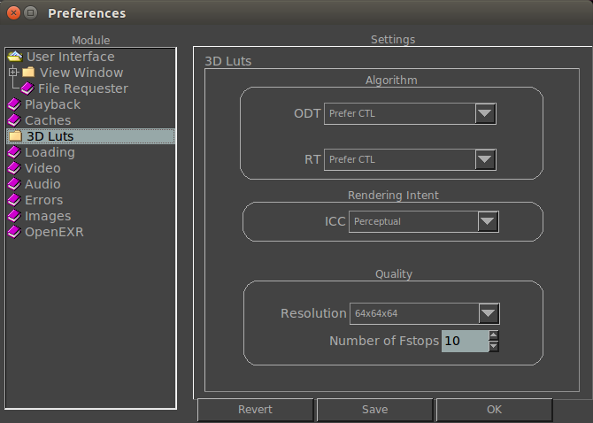

|  |
Displayallows you to configure whether the LUT will prefer CTL or ICC. This section allows you to change the default Rendering Intent for ICC profiles. This setting specifies the resolution of the 3D Lut. Higher settings are more accurate but your graphics card may not support it. The Number of Fstops controls how many fstops will the 3D Lut cover. If you need more detail in the black levels, this is the setting to increase. Note that even though black levels increase in quality, midtones diminish. Use this setting together with Resolution for more control. |